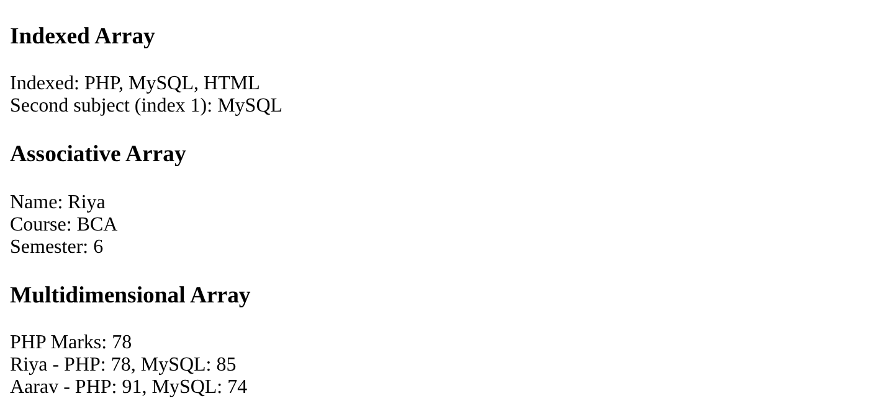

Create indexed, associative, and multidimensional arrays and display their elements.
Program 5.4: Creating and Displaying Indexed, Associative, and Multidimensional Arrays
Concepts used
The array() construct and the bracket form, indexed array, associative array, two-dimensional array of associative records, implode(), nested access.
Test data: Indexed array of subjects: PHP, MySQL, HTML. Associative record: name Riya, course BCA, semester 6. Multidimensional array of marks: Riya with PHP 78 and MySQL 85; Aarav with PHP 91 and MySQL 74.
Logic
- Create an indexed array with the
array()construct and display its values. - Create an associative array with the bracket form and display its values by key.
- Create a two-dimensional array whose rows are associative arrays, and display one nested value and every row.
Code
<!DOCTYPE html><html lang="en"><head> <meta charset="UTF-8"> <title>Three Types of Arrays</title></head><body> <?php // 1. Indexed array created with the array() construct $subjects = array("PHP", "MySQL", "HTML"); echo "<h3>Indexed Array</h3>"; echo "Indexed: " . implode(", ", $subjects) . "<br>"; echo "Second subject (index 1): " . $subjects[1] . "<br>"; // 2. Associative array created with the bracket form $student = ["name" => "Riya", "course" => "BCA", "semester" => 6]; echo "<h3>Associative Array</h3>"; echo "Name: " . $student["name"] . "<br>"; echo "Course: " . $student["course"] . "<br>"; echo "Semester: " . $student["semester"] . "<br>"; // 3. Multidimensional array: each row is an associative array $results = [ ["name" => "Riya", "PHP" => 78, "MySQL" => 85], ["name" => "Aarav", "PHP" => 91, "MySQL" => 74], ]; echo "<h3>Multidimensional Array</h3>"; echo "PHP Marks: " . $results[0]["PHP"] . "<br>"; foreach ($results as $row) { echo $row["name"] . " - PHP: " . $row["PHP"] . ", MySQL: " . $row["MySQL"] . "<br>"; } ?></body></html>
Output
These are real screenshots, taken by running the program with the test data.

Understanding the output
The first section shows that the indexed array keeps its values in order and that index 1 holds the second value. The second section shows values reached through meaningful keys. The third section shows a nested value, Riya's PHP marks, followed by both records displayed row by row, which demonstrates that one variable can hold a complete table of data.
How it works
The indexed array is created with the traditional array() form, and its values are displayed together with implode() and singly with the index 1. The associative array is created with the bracket form, and each value is reached by its key. The multidimensional array $results has two rows, each of which is an associative array. The expression $results[0]["PHP"] first selects row 0, Riya's record, and then the key "PHP", giving 78. The foreach loop places each row in $row, and the keys of the inner array are used to display the name and both marks.
Run it yourself
Real PHP 8.3 runs inside your browser (nothing is sent to a server). Forms, links, cookies and sessions work as they do in XAMPP. The first run downloads PHP, so it needs internet and takes a few seconds.
Try this:
- Add a fourth subject to the indexed array.
- Add a third student to the multidimensional array.
Running it in XAMPP
Save the file in C:\xampp\htdocs\phpbook\ch05 and open http://localhost/phpbook/ch05/three-arrays.php.
Common mistakes
- Writing
$results["PHP"]without the row index; the outer array has integer keys 0 and 1, not the key "PHP". - Mixing up => and ->; the arrow -> has a different meaning in PHP.
- Using echo
$subjects; to display an array, which prints only the word Array together with a warning. - The three kinds of array are compared in Table 5.2.
- Table 5.2: Comparison of the Three Array Types
- Arrays become useful when their elements are processed one after another. The methods of visiting every element of an array are explained in the next section.
Viva questions
What are the three types of arrays in PHP?
From which index does an indexed array start?
How do you read Riya’s PHP marks from a two-dimensional array?
$marks["Riya"]["PHP"] or $students[0]["PHP"].